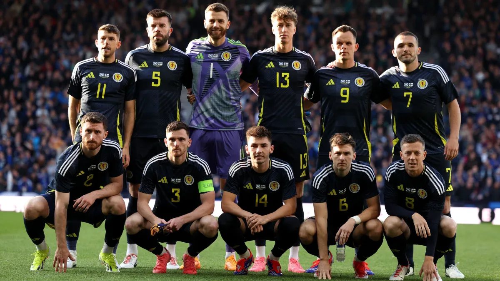

Seleção Escocesa na UEFA Eurocopa
A seleção da Escócia tem como objetivo na Eurocopa 2024 demonstrar um desempenho competitivo e tentar avançar além da fase de grupos, algo que não conseguiu em suas participações anteriores. O objetivo principal é chegar às fases eliminatórias, com seu principal jogador Scott McTominay
